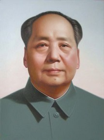

毛泽东（1893年12月26日－1976年9月9日），湖南湘潭人，别名石三伢子，字润之（原作咏芝，后改润芝），笔名子任。中国革命家、战略家、理论家、诗人，祖籍河北鸡泽，始祖毛遂。毛泽东生于一个农民家庭。辛亥革命爆发后在起义的新军中当了半年兵。1914～1918年，在湖南第一师范学校求学。毕业前夕毛泽东和蔡和森等组织革命团体新民学会组织，五四运动前后接触和接受马克思主义。
1920年11月，在湖南创建共产主义组织。 1921年7月，出席中国共产党第一次全国代表大会，是中国共产党的缔造者之一，后任中共湘区委员会书记，领导长沙、安源等地工人运动。1923年6月，出席中共“三大”，被选为中央执行委员，参加中央领导工作。
1926年11月，任中共中央农民运动委员会书记。是中国共产党、中国人民解放军和中华人民共和国的主要缔造者和领袖，毛泽东思想的主要创立者。从1949年到1976年，毛泽东是中华人民共和国的最高领导人。他对马克思列宁主义的发展、军事理论的贡献以及对共产党的理论贡献被称为毛泽东思想，毛泽东担任过的主要职务几乎全部称为「主席」，所以被尊称为毛主席。
一、毛泽东引导中国走上社会主义发展道路，确立了社会主义基本制度。
二、毛泽东领导中国人民开辟了社会主义现代化建设道路，开始了沿着社会主义道路实现中华民族伟大复兴的新纪元。
三、开创了人民当家作主的新时代，开始了实现社会主义民主的艰辛而曲折的探索。
四、奠定了中国共产党的执政地位，对保持马克思主义政党的先进性和执政地位作了不懈的探索。
五、奠定了新中国在国际上的大国地位，为开创独立自主的和平外交作了不懈的努力。
主要作品
Evaluation of Chairman Mao
“ 毛泽东虽然在晚年犯了严重的错误，但是他对中国革命的不可争论的功绩远大于他的过失，他仍然受到中国人民的崇敬。毛泽东思想作为马克思主义在中国的发展，仍然是中国共产党的指导思想。 ”